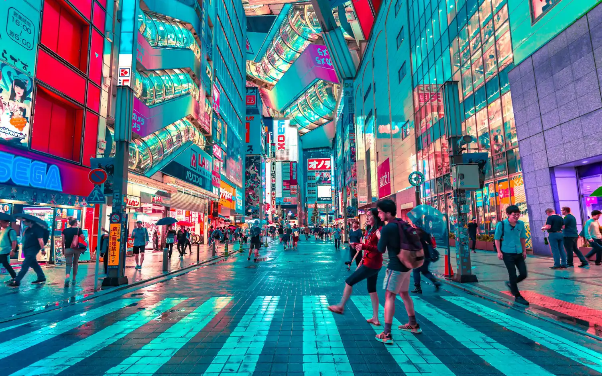
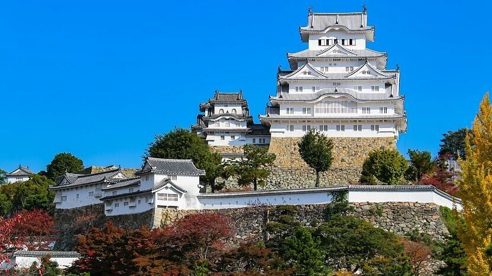
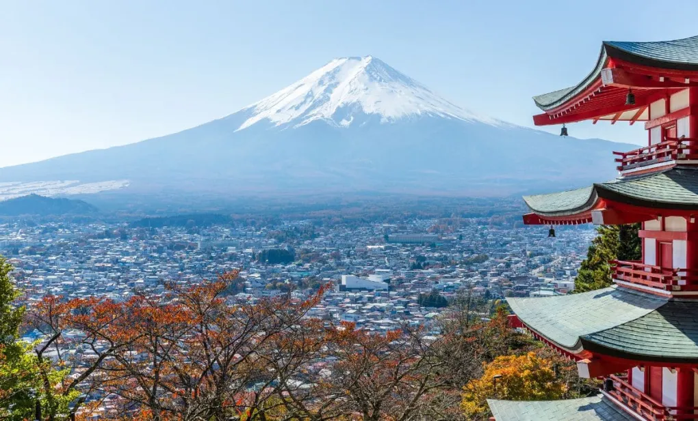

Toquio

Toquio e a capital do Japao e uma das cidades mais modernas do mundo. La voce encontra tecnologia, cultura tradicional, comida incrivel e muitos pontos turisticos famosos.
Pontos turisticos
- Castelo de Himeji
Um dos lugares historicos mais bonitos do Japao, conhecido pela arquitetura marcante e pela beleza ao redor.
- Shibuya Crossing
O cruzamento mais famoso de Toquio, cheio de movimento, telas grandes e clima moderno.
- Tokyo Tower
Um dos simbolos da cidade, com uma vista muito bonita principalmente durante a noite.
Castelo de Himeji

O Castelo de Himeji e um dos pontos historicos mais famosos do Japao. Ele chama atencao pela arquitetura, pela cor clara e pelo visual bonito ao redor.
Monte Fuji

O Monte Fuji e a montanha mais famosa do Japao e um dos maiores simbolos do pais. Sua paisagem e uma das imagens mais conhecidas do turismo japones.